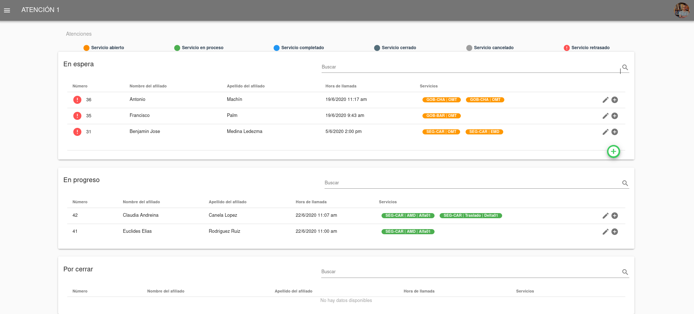

Operador/a¶
El Operador es la persona que atiende la llamada telefónica y agrega la información del afiliado y su solicitud en la plataforma Atención-1. Recuerda que si quieres conocer los conceptos utilizados en la plataforma Atención-1, puedes revisar este Glosario que hemos preparado.
Para ingresar a la plataforma como Operador, debemos escribir en la barra de dirección de nuestro navegador: https://atencion1.venedigital.com. Una vez allí ingresaremos nuestro usuario y contraseña para ingresar a la plataforma.

Al ingresar a la plataforma, vemos el panel de atenciones en espera, en progreso y por cerrar.
Recordemos que una atención es un conjunto de servicios ofrecidos a titulares o afiliados de pólizas de seguros. Al atender una llamada, lo primero que debemos hacer es proceder a crear una atención. Para crear una nueva atención:
Hacemos click en el círculo de color verde con un signo «+» en su interior.
A continuación en el recuadro que contiene el símbolo de la lupa, introducimos la cédula o el nombre de la persona que solicita ser atendida. Atención-1 permite realizar búsquedas con número de cédula o nombre, parcial o completo, de la persona afiliada.
Al pulsar Enter o hacer click sobre la lupa, obtendremos los resultados de la búsqueda. En caso de no existir un afiliado/a con esos datos, el sistema permitirá ingresar los datos de una nueva persona afiliada. En caso contrario, deberá seleccionarse de la lista desplegada, cuál es el afiliado o la afiliada a atender.